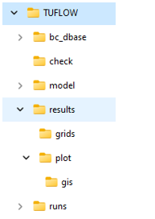

Section 15 Viewing Outputs
15.1 Introduction
This chapter provides guidance on viewing and processing TUFLOW output. For guidance on customising outputs, see Chapter 11. The fundamental software necessary for viewing results is discussed in Section 2.2. The recommended software for viewing TUFLOW results, due to the TUFLOW Viewer contained within the QGIS TUFLOW Plugin, is QGIS. This chapter is based on using QGIS as the viewing platform. It describes the following:
15.2 Folder Structure

Simulation outputs are written, by default, as long as the Map Output Interval tcf command has been specified (a mandatory command). If an output folder has not been specified (see Section 11.1), TUFLOW will write results to the folder in which the .tcf is located. It is recommended to use the Output Folder command to write results to a results folder, for example ‘TUFLOW\results’.
The adjacent image shows the typical folder structure of a TUFLOW model folder, including the breakdown of the results folder. The typical files found within the results folder are listed in Table 15.1. Note, this will depend on the model and the output commands specified in the .tcf.
If no other output commands (detailed in Chapter 11) have been defined, by default TUFLOW will write outputs in XMDF format, at the interval specified by the mandatory Map Output Interval command.
Within the results folder, TUFLOW will automatically create a ‘plot’ folder (for example ‘TUFLOW\results\plot’), containing both the .tpc output and a gis folder containing the TUFLOW plot output in .csv and GIS format (see Section 11.3). If the user has requested grid outputs, TUFLOW will automatically create a ‘grids’ folder in the location where the results have been written (for example ‘TUFLOW\results\grids’).
What TUFLOW outputs depends on the output settings specified in the model. Table 15.1 describes the typical files contained within the Output folder. If using the Output Folder command within the .ecf (or Start 1D Domain block) some of these outputs will be located in the folder referenced by that command.
| Folder | Filename | Description |
|---|---|---|
| results\ | .xmdf / .dat | The 2D temporal mesh output (e.g. XMDF or DAT and associated file types). See Section 15.4.1 for information on how to view these outputs. |
| results\ |
_MB.csv _MB_HPC.csv _MB1d.csv _1d_MB.csv |
Contains information on inflows and outflows, volume, predicted volume error and the mass and cumulative mass errors as a percentage. See Section 14.8.2 and Section 14.8.3 for information on these outputs. |
| results\ |
_PO.csv _POMM.csv |
Contains time series data output from 2D domains, for a range of hydraulic parameters based on the specified time-series output data type. |
| results\ |
_TS _TSF _TSL _TSMB _TSMB1d2d |
The _TS GIS layers contain time-series output with each layer presenting different information. |
| results\ | _1d_ccA | Contains information on culverts and bridges. See Section 15.3.3 for more information. |
| results\ |
_1D_mmH _1D_mmQ _1D_mmV |
GIS layers containing maximum/minimum values for water levels at nodes, and flows and velocities in channels. See Section 15.3.2 for more information. |
| results\grid | .tif / .flt / .asc | TUFLOW automatically writes raster outputs to a results\grids folder, in the format specified by the Map Output Format command. Users typically write maximum raster output only. User the mesh output for the temporal outputs due to file size and viewing abilities. See Section 15.4.2 for information on how to view these outputs. |
| results\plot\ | .tpc | TUFLOW Plot Control file is a text file. It is used by the QGIS TUFLOW Plugin to load plotting dataset, as documented in the TUFLOW Wiki. |
| results\plot\csv\ |
_1d_Chan.csv _1d_Cmx.csv _1d_Nmx.csv _1d_Node.csv |
The _1d_Chan layer contains information on the channel connectivity and properties. The _1d_Cmx layer contains the channel maximums data: flows and velocities as well as time of the maximums. The _1d_Nmx layer contains the node maximums data: water levels and energy levels. The _1d_Node layer contains information on the 1D nodes. |
| results\plot\csv\ | _1d_<ot>.csv | Time series output for output type <ot> at the 1D nodes or channels. The output is controlled by the Output Data Types command, which by default includes “H”, “Q”, “S” and “V”. |
| results\plot\csv\ | _1d_O.csv | Operational structures time series output, including information on the operational status and time varying values of variables. |
| results\plot\csv\ | _2d_<ot>.csv | Time series output for each 2d_po output type <ot>, as triggered by Read GIS PO commands. |
| results\plot\csv\ |
_RLP_H.csv _RLP_Hmx.csv _RLL_Q.csv _RLL_Qmx.csv _RLR_Vol.csv _RLR_Volmx.csv |
Reporting Location water levels (_H) and maximums plus other information at the peak water level (_Hmx). |
| results\plot\csv\ |
_SHmx.csv _SQ.csv |
Maximums and other information (_SHmx) and time-series total structure flow (_SQ) for all 1D structures and grouped structure output (see Section 11.3.4). This output is controlled by the “S” option in Output Data Types, which by default includes “S”. |
| results\plot\gis\ | _PLOT.csv | Summary .csv file containing information on the GIS objects and plot types available. |
| results\plot\gis\ |
_PLOT_L _PLOT_P _PLOT_R |
GIS layer in a vector format containing all plot line objects (e.g. 1D channels and flow Reporting Locations), plot point objects (e.g. 1D nodes and water level Reporting Locations) or region objects (e.g. total volume within the region). |
15.3 1D Output
TUFLOW outputs the following 1D outputs:
- TUFLOW Plot Control file (.tpc) (Section 15.3.1)
- Maximum and Minimum Output (Section 15.3.2)
- Closed Channels Performance (Section 15.3.3)
- GIS Time Series Outputs (_TS) (Section 15.3.4)
- Open Channel Water Level Line Output (Section 15.3.5)
- ESTRY Output File (.eof) (Section 14.6)
- MB1D.csv (Section 14.8.2)
For viewing SWMM 1D results, see the TUFLOW-SWMM Result Wiki page
15.3.1 TUFLOW Plot Control file (TPC)
A range of model time-series results from the 1D and 2D domains are output in .csv file format to the “results\plot\csv” folder. These files are traditionally used in spreadsheet software for graphing and time-series analysis. TUFLOW Plot Control file is a text file used by the TUFLOW Viewer (included in the QGIS TUFLOW Plugin) to load the plotting dataset into QGIS. Viewing the data spatially and temporally in QGIS is generally considered the preferred approach for day to day interaction with the csv files due to the increased workflow efficiency working in this manner. Documentation focused on viewing the .tpc in the TUFLOW Viewer is contained in the Time Series Output TUFLOW Wiki page. Some key pages related to viewing 1D time-series (plot) outputs are listed below:
- Loading in TPC
- Plotting Time Series
- Plotting Longitudinal Profiles
- Plotting 1D Flow Regimes
- Plotting 1D Cross-Section Inputs
An example of loading in a .tpc file into the TUFLOW Viewer is shown below.
Note: The tcf Start Time Series Output and Time Series Output Interval commands are used to control the period and frequency of output available in TUFLOW Viewer in QGIS.
15.3.2 Maximum and Minimum Output
Maximum and minimum values for water levels at nodes, and flows and velocities in channels, are output to GIS layers with the extensions 1d_mmH, 1d_mmQ and 1d_mmV, as well as to the end of the .eof file (see Section 14.6). The GIS layers can be opened in a GIS software, an example of the 1d_mmH and 1d_mmQ, with its automatic styling, is shown in Figure 15.1.
Figure 15.1: Maximum and Minimum Water Level and Flow Output
The following attributes are contained in the 1d_mmH layer:
- Node: ID of the node.
- Hmax: maximum water level.
- Hmin: minimum water level.
- tHmax: time of occurrence of the Hmax value.
- tHmin: time of occurrence of the Hmin value.
- dH: the largest water level drop across the channels that end at that node. Only channels that are digitised so that their downstream end is at the node are used to determine dH. Provided channels are digitised from upstream to downstream this is useful for identifying any increases in water level caused by any instabilities (thematically map the dH attribute – negative values indicate the water levels are increasing downstream). Pit channels are excluded from determining dH.
The following attributes are contained in the 1d_mmQ layer:
- Channel: ID of the channel.
- Qpeak: equal to the absolute maximum (positive or negative) flow. This is particularly useful for tidal reaches or where a channel has significant flows in both directions.
- Qmax: maximum flow.
- Qmin: minimum flow.
- tQpeak: time of occurrence of the Qpeak value.
- tQmax: time of occurrence of the Qmax value.
- tQmin: time of occurrence of the Qmin value.
- dHmax: difference in maximum water level drop through the channel. This is useful for quickly identifying large unexpected changes in flood level.
- pSmax: the slope as a percentage of the water surface along the channel. This is useful for quickly identifying any troublesome behaviour along 1D networks by viewing/searching for any negative (adverse) slopes.
- Style_SF: used for the automatic styling of the output. The value is a ratio based on the the channels Qmax value, and the maximum of all vMax values within the table and therefore will range between 0 and 1.
- Style_dir: angle based on the channels digitised direction.
The following attributes are contained in the 1d_mmV layer:
- Channel: ID of the channel.
- Vpeak: equal to the absolute maximum (positive or negative). This is particularly useful for tidal reaches or where a channel has significant flows in both directions.
- Vmax: maximum velocity.
- Vmin: minimum velocity.
- tVpeak: time of occurrence of the Vpeak value.
- tVmax: time of occurrence of the Vmax value.
- tVmin: time of occurrence of the Vmin value.
- Style_SF: used for the automatic styling of the arrow. The value is a ratio based on the the channels Vmax value, and the maximum of all Vmax values within the table and therefore will range between 0 and 1.
- Style_dir: angle based on the channels digitised direction.
15.3.3 ccA GIS Layer
The _ccA GIS layer contains a summary of information for culverts and bridges. It includes the following attributes:
- Channel = The ID of the channel.
- pFull_Max = The percentage of the peak flow area over the culvert/bridge area. If the culvert/bridge flowed full at any point during the simulation this will be 100%.
- pTime_Full = The percentage of time the culvert/bridge ran full over the time the culvert/bridge ran at least 10% full.
- Area_Max = The peak flow area that occurred during the simulation.
- Area_Culv = The culvert/bridge flow area (when full).
- Dur_Full = The time in hours the culvert/bridge was running full.
- Sur_CD = Surcharge cut-off depth. Depth above pit upstream invert for a pit to be considered surcharging.
- Dur_Sur = Duration of surcharge. Total duration (hrs) that the pipe is considered surcharging.
- pTime_Sur = Percent time that the pipe is surcharging relative to the time the pipe is running at 100% full.
- TFirst_Sur = Time of first surcharge (hrs).
- Dur_10pFull = The time in hours the culvert/bridge ran 10% full or more.
The layer’s lines can be coloured and thickened according to the pFull_Max attribute (styled using the QGIS TUFLOW Plugin ‘Apply TUFLOW Styles’ Tool for .shp/.gpkg format or output directly for the .mid/.mif format). The thinner and paler the line, the smaller the pFull_Max value. The pFull_Time attribute is also useful for thematically mapping in GIS to identify culverts that are performing well, and others that are not. The example shown in Figure 15.2 illustrates the _ccA GIS layer output.
Figure 15.2: Example of the ccA GIS Layer Highlighting Culvert Performance
15.3.4 _TS GIS Layer
The 1D water levels at nodes (_1d_H.csv), and flows (_1d_Q.csv) and velocities (_1d_V.csv) in channels are output in separate .csv files. This information is also provided in the _TS GIS layer and within the .eof file (Section 14.6). Maximum and minimum values are not output to the .csv files however are contained within both the _TS GIS layer and the .eof file as well as the 1d_mmH, 1d_mmQ and 1d_mmV GIS layers (Section 15.3.2).
The _TS GIS layers contain time-series output with each layer presenting different information, as described below and in Table 15.2. In addition to the time-series data, each layer contains several attributes at the start, summarising the time-series data. These attributes are:
- The maximum and minimum values;
- The time in hours of the maximum and minimum values; and
- The average and the average of the absolute mass error values (for the TSMB and TSMB1d2d files only).
| GIS Layer Name | Description |
|---|---|
|
_TS_L _TS_P |
Contains all 1D channel (velocities and flows), 1D nodes (water levels) and 2D PO (plot output locations from 2d_po layers). |
| _TSF_P | Contains the flow regime flags for culverts (see Table 5.6), and other types of channels (see Table 14.1). |
| _TSL_P |
Contains the culvert and bridge loss coefficients after any adjustments if If there is a manhole connected to one/both ends of a culvert, the loss coefficients will be affected by any manhole energy losses, as discussed in Sections 5.11.4.5. For culverts, the three values shown for each time are the inlet (entry) loss coefficient; additional loss coefficient (this value is the sum of any 1d_nwk Form_Loss (bend loss) value on the channel or an upstream pit and any manhole energy loss contribution); and outlet (exit) loss coefficient. For bridges, the bridge loss coefficient adopted is shown. |
| _TSMB_P | Contains the mass errors at 1D nodes (refer to Section 14.8). |
| _TSMB1d2d_P | Contains the mass errors across 1D/2D interface linkages, ie. HX links (refer to Section 14.8). |
The _TS GIS layers can be loaded into QGIS. Once loaded, they will automatically appear in the TUFLOW Viewer Results window, allowing users to view time-series data, as shown in Figure 15.3.
Figure 15.3: Example of the _TS Layer Flow Output
There are two ways to style the _TS layers. The first way is the default TUFLOW Styling, which displays arrows for velocity and flow, and points for water level. The second way is by using the Stability Checking Styling Tool. This tool styles the _TS layer into categories: likely unstable, possibly stable and stable, as shown in Figure 15.4. How to use this tool, and the rules applied to the categories are discussed on the Stability Checking Styling Tool TUFLOW Wiki page.
Figure 15.4: Example of the _TS Layer Stability Styling
Note that the output frequency of the time output in _TS GIS layers is automatically adjusted so that the limit of 245 output times is not exceeded (this limit is the maximum number of attributes allowed in some GIS software). For example, if based on the Time Series Output Interval setting there are 400 output times, then every second time will be written to the _TS GIS layer giving a total of 200 output times, but at least the full hydrograph is displayed!
For models that contain 1D operational structures (refer to Section 5.10), an additional file (_1d_O.csv) will be output to the “results\plot\csv” folder containing information on the operation of each structure over time. This file serves as a valuable check for the commands defined within the .toc.
15.3.5 1D Water Level Lines (WLL)
As mentioned in Section 11.2.4, 1D domain results can be output in combination with 2D domain(s) by using the 1d_wll GIS layer and the Read GIS WLL command. When WLL are used, the water level from the 1D node is interpolated into a 2D format when viewing the results (for both mesh and grid outputs). If the 1D WLLs and 2D domains overlap, the 1D results are displayed on top of the 2D results. Viewing of these 2D mesh and raster results is discussed in Section 15.4.1 and 15.4.2.
Additionally, viewing of 1D results in a 2D domain using the WLL functionality is demonstrated in Tutorial Module 11.
15.4 2D Output
TUFLOW outputs the following 2D outputs:
Additionally, time-series data from the 2D domain can be output using plot outputs (Section 15.4.3).
15.4.1 Mesh Output
The TUFLOW Viewer (found in the QGIS TUFLOW Plugin) can be used to load mesh temporal outputs in QGIS. When loading this data into TUFLOW Viewer, all map outputs specified by the user in the Map Output Data Types will automatically load under the results type panel. Symbology can be set for the outputs by right-clicking on the output in the results panel, in the same way described for raster outputs (Section 15.4.2).
Documentation focused on map outputs in the TUFLOW Viewer is contained in the TUFLOW Wiki Map Outputs page. Some key pages related to viewing mesh outputs are linked below:
- Loading Map Outputs
- Display Maximums
- Save Default Styles
- Plotting Time Series
- Plotting Cross Sections
An example of loading in an .xmdf file into the TUFLOW Viewer is shown below.
Note: Using TUFLOW Viewer, it is also possible to extract transect flow time-series from the mesh output result (see the TUFLOW Wiki for details). Unfortunately, map outputs do not include all required information for accurate extraction of this output type. A more accurate way, and the recommended approach, to obtain flow time-series information is to use the 2D plot outputs (Section 15.4.3).
15.4.2 Raster Output
Grid (raster) based outputs can be loaded into QGIS via drag and drop. Once loaded, there is a range of styling options. An example of setting the symbology for a raster layer is provided in Tutorial Model 1.
It is also possible to load NetCDF rasters into TUFLOW Viewer (when the Map Output Format has been set to NC or HRNC). The Loading NetCDF Grids Wiki page describes this process.
15.4.3 Plot Output
The location of plot outputs need to be defined prior to the simulation, as described in Section 11.3.2. 2D time-series data from plot output (PO) or longitudinal profile (LP) data at locations defined using 2d_po and 2d_lp layers (see Section 11.3.2) are output as _PO.csv and _LP< name>.csv files into the “results” folder. These files can be used in spreadsheet software for graphing and time-series analysis. 2D plot outputs can also be loaded and viewed in the TUFLOW Viewer using the same method described in Section 15.3.1. An example of plotting 2d_po outputs is shown in Result Viewing - Tutorial 1.
The commands Start Time Series Output and Time Series Output Interval are used to control the period and frequency of output.
When writing plot outputs, TUFLOW produces two .csv files, _PO.csv and _POMM.csv. _PO.csv is time-series data over the duration of the simulation. _POMM.csv reports the maximum and minimums. The columns included in the _POMM.csv file are:
- Output (for example, columns containing summary information for Flow, Water Level and Velocity)
- Location (name of the 2d_po point, line or region)
- Maximum (Extracted from Time Series)
- Time of Maximum
- Minimum (Extracted From Time Series)
- Time of Minimum
Time-series and maximum output in .csv files is also available when using Reporting Locations (see Section 11.3.3) and Structure Groups (see Section 11.3.4). These two options provide the ability to combine 1D and 2D domain outputs. The .csv files that are produced are listed in Table 15.1.
15.5 Post Processing
The open non-proprietary file formats used by TUFLOW for its input and output make it well suited to automation via scripting as a means to improve workflow efficiency. Many modellers develop their own tools to assist in their use of TUFLOW and to automate many tasks. A GitLab TUFLOW User Group has been established to support the sharing and collaborative development of these tools. These tools include scripts to assist with post-processing of TUFLOW outputs.
Where repeated plotting of results is required during a project, or there are a large number of charts to produce, Python scripts offer an attractive workflow efficient option. For some initial guidance regarding using Python scripts please see our Python eLearning.
Experienced python coders may also be interested in the PyTUFLOW tools, developed to simplify result analysis and post-processing automation. PyTUFLOW for instance can allow real-time calibration plots to be produced during the course of a simulation.
Additionally, the TUFLOW Utilities offer a range of options for post-processing TUFLOW map and grid output. Some of the more common functions include:
- Creating a vector GIS (e.g. .shp) file of velocity vectors;
- Creating a grid of the maximum values from two or more input grids; and
- Calculating the affluxes between two grids (see Section 15.6).
Refer to Chapter 17 and the TUFLOW Utilities Wiki Page for further information on the TUFLOW Utilities.
15.6 Impact Mapping
It is often necessary to carry out a comparison of results between two or more model simulations. For example, to quantify the impact of a proposed development on the predicted flood extent and flood depths, or assess the sensitivity of the model due to changes in one of the parameters. A number of the TUFLOW utilities (refer to Section 17) may be used to carry out this comparison. For example, the ASC_to_ASC utility may be used to compare the results contained in two grid output file (TIF, FLT or ASC formats). This utility outputs two result grids, shown in Figure 15.5:
- A difference grid subtracting the second input grid from the first; and
- A second grid with a “_wd” suffix, denoting locations where the model was previously wet and now dry, and vice versa.
Figure 15.5: Impact Mapping
An example of using the ASC_to_ASC utility to create an impact grid is available in the TUFLOW Tutorial Module 2.
Alternatively, the RES_to_RES utility may be used. Rather than comparing grid output, the RES_to_RES compares mesh result files (e.g. .xmdf format) for a single timestep or all timesteps in the model simulation. Note, unlike ASC_to_ASC, RES_to_RES is limited to comparing model results with the same underlying .2dm mesh file.
Further information on ASC_to_ASC, RES_to_RES and the other TUFLOW utilities are discussed in Chapter 17, with more detail and examples via the TUFLOW Wiki Utilities page.
15.7 Animations
Result animations can be exported from the TUFLOW Viewer for all accepted result types (map outputs, time series, particles etc). The process for animation creation is the same regardless of the result type. The tool will export an image for each timestep in a given range, then use ffmpeg to convert the images into a video file. TUFLOW Viewer offers the additional functionality of adding dynamic plots and dynamic time text. It also offers convenience functionality for adding items such as a legend, images etc, however these can also be added manually in the print layout.
Instructions on how to export animations is found on the TUFLOW Wiki and an example provided in the below video.